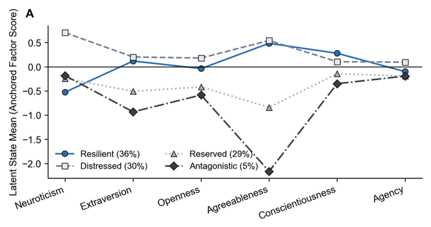

Future of work · Research companion
Four personality profiles tracked across midlife, and purpose predicted who recovered when distress eased.
A secondary analysis of the Midlife in the United States (MIDUS) national panel (N = 7,108 over approximately 20 years) and an independent Refresher sample (N = 3,577). Latent profiles from Big Five and Agency indicators were estimated, then followed with a joint latent Markov model. Four profiles were supported and replicated: Resilient (36.4%), Distressed (29.5%), Reserved (29.0%), and Antagonistic (5.1%).
At a glance
4Replicated profilesResilient, Distressed, Reserved, Antagonistic
29.5%→7.2%Distressed share over ~20 yearsRecovery to Resilient and disengagement to Reserved
1.23Purpose OR for recovery directionPer SD among Distressed movers; 95% CI [1.01, 1.50]
$3,049Lower lost productive timeRecovered movers per worker-year; 95% CI [−$5,038, −$1,060]
The four profiles

Tools used
Mplus 8.8 (mixture / LPA–LTA); R (lavaan, LMest, mclust); Python; HTML and CSS.